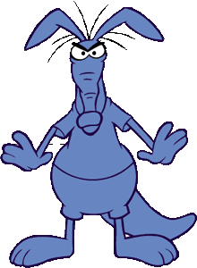
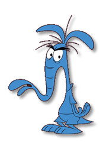
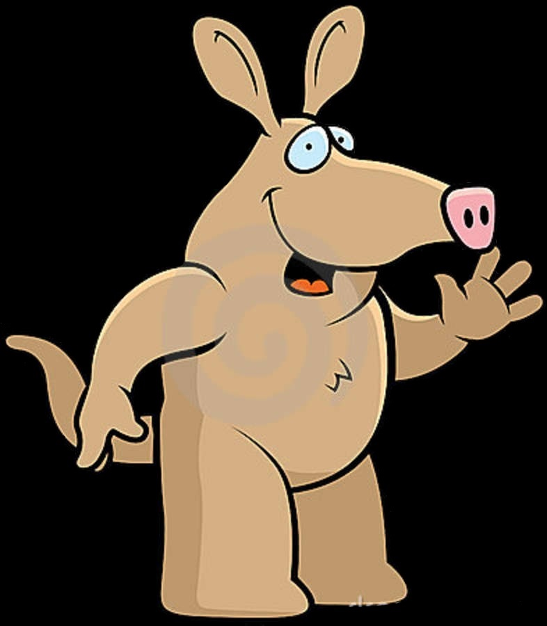

ABOUT US

Christopher graduated from Louisiana State University in 2004 with a degree in General Studies. He currently returned to LSU in the fall of 2013 to pursue a second degree in Computer Science. Computer Science experience include HTML and introductory Java.
Michael Zielweski

Michael is currently a freshman at Louisiana State University and a graduate from Catholic High School in Baton Rouge, La. Michael is majoring in Computer Science and has experience in Linux and introductory Java.
Brendan Nestor

Brendan is currently a International Trade and Finance Major at Louisiana State University. Brendan previously served as a Second Class Petter Officer in the United States Navy. From his naval background Brendan has experience in working with groups/teams and posesses strong organizational skills.